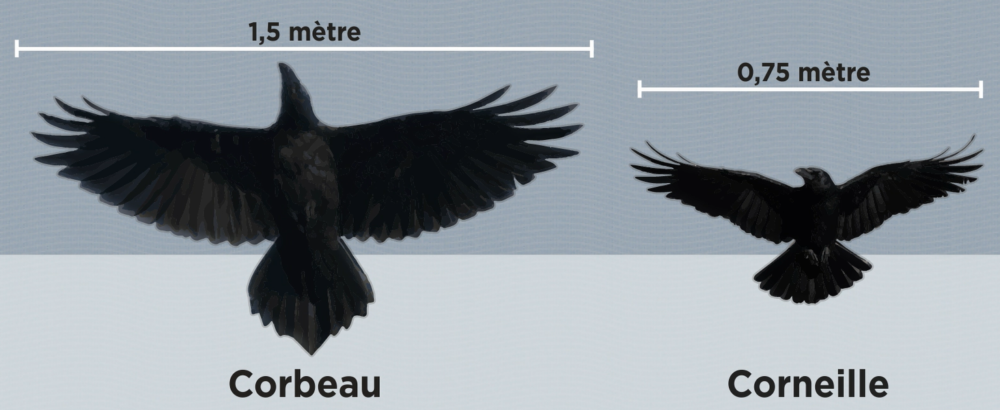
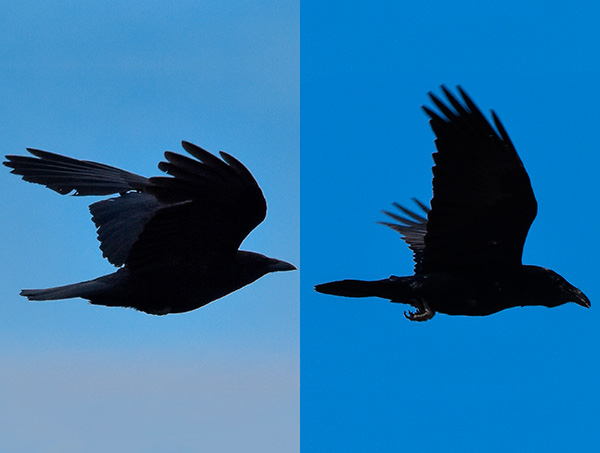

Une corneille aussi noire que la nuit
Super-pouvoir :
La corneille noire n'est pas un oiseau ordinaire, bien que les autres oiseaux du règne animal sont des animaux pour la plupart intelligent, la corneille noire est elle très intelligente et quoi de mieux pour illustrer cet exemple qu'une vidéo démonstrative de son intellecte.
La corneille noire est donc capable, de fabriquer des outils, de cacher sa nourriture et possède un ingénieux système d'avertissement pour ses prédateurs, elle fait varier son cri de manière plus ou moins aigu afin de montrer le degré de gravité de la menace, plus le cri est aigu, plus le danger est présent c'est aussi simple que ça.
La cornelle et le corbeau sont néanmoins deux êtres à part
Le corbeau est de plus grande taille que la corneille et son bec est plus gros, moins effilé. 
Un bon critère pour distinguer les deux espèces en vol est la queue : elle est longue et en forme de losange chez le corbeau alors qu'elle est plus arrondie chez la corneille.

 Comparaison en vol.
© Stéphane Déry.
Comparaison en vol.
© Stéphane Déry.